組み立てマニュアル(Carbon 4GB)
1. モーターの取り付け
| 写真 | 部品または工具 | 個数 |
|---|---|---|
| 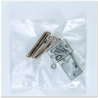 | 1.モーター固定ネジ(袋) | 1 |
 |
ギヤモーター | 2 |
 |
プラスドライバー +2×100 | １本 |
モーターに固定金具を取り付けていきます。

固定具を取り付けネジで固定します。
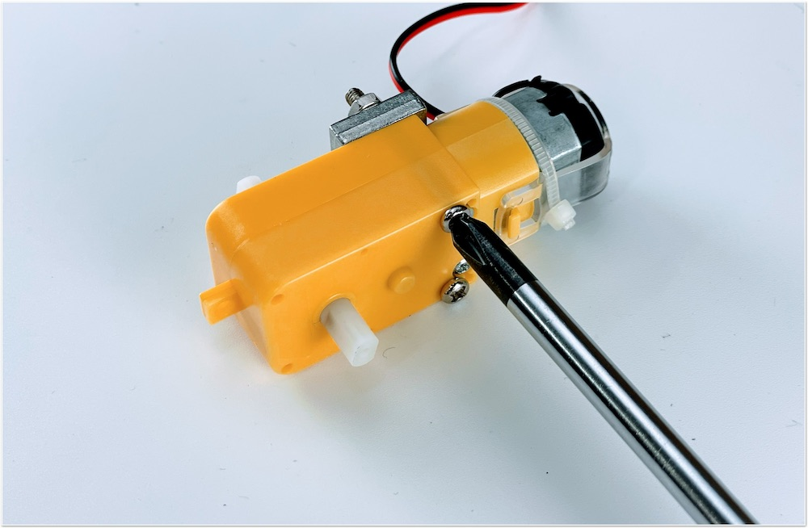
金具は内側にそれぞれ対になる向きに取り付けます。


カーボンプレートに、モーターを接続します。


2. カーボン連結ネジの取り付け
| 写真 | 部品または工具 | 個数 |
|---|---|---|
 |
3.カーボン連結ネジ袋 | 1 |
|
プラスドライバー +2×100 | １本 |
カーボン連結用のスペーサーを接続します。


3. ボールキャスター組み立て
| 写真 | 部品または工具 | 個数 |
|---|---|---|
 |
ボールキャスター | 1 |
 |
２．キャスター固定 | １袋 |
|
プラスドライバー +2×100 | １本 |
キャスターの組み立てをおこないます。
まず、ボールを取り付けます。

3本の棒をボールのうえに配置します。

プラスチック部品または工具を取り付けます。

長い方に取り付け、ネジで固定します。


4. キャスターの固定
| 写真 | 部品または工具 | 個数 |
|---|---|---|
 |
2.キャスター固定ネジ袋 | 1 |
 |
キャスター固定カーボン | 4 |
 |
カーボン中段 | 1 |
|
プラスドライバー +2×100 | １本 |
ボールキャスターをカーボンに取り付けます。

キャスター固定カーボン4枚を重ねて取り付けます。


5. カーボンの取り付け
| 写真 | 部品または工具 | 個数 |
|---|---|---|
 |
4.カーボン固定ネジ(上) | 1 |
下段のカーボンと中段のカーボンを連結します。

モーターの線も穴から出しておきます。

白いスペーサーで、4隅を固定します。

6. タイヤの取り付け
| 写真 | 部品または工具 | 個数 |
|---|---|---|
 |
タイヤ | 2 |
 |
精密ドライバー | 1 |
タイヤを装着します。


7. バッテリーの取り付け
| 写真 | 部品または工具 | 個数 |
|---|---|---|
 |
両面テープ | 1 |
| モバイルバッテリー（旧パッケージの場合） | 1 | |
 |
モバイルバッテリー（新パッケージの場合） | 1 |
バッテリーを両面テープで装着します。


8. カーボン上段の取り付け
| 写真 | 部品または工具 | 個数 |
|---|---|---|
 |
6.Jetson固定ネジ袋 | 1 |
 |
カーボン上段 | 1 |
 |
精密ドライバセット ED−２０ | 1 |
Jetson固定ネジを取り付けます。


9. WiFi Moduleの取り付け
| 写真 | 部品または工具 | 個数 |
|---|---|---|
 |
Jetson Nano 開発者キット B01,A02 | 1 |
 |
Intel Dual Bandwireless-AC 8265 Desktop Kit（４GBモデルのみ） | 1 |
 |
Jetbot CameraMount （４GBモデル） | 1 |
 |
スパナ | 1 |
|
精密ドライバセット ED−２０ | 1 |
|
プラスドライバー +2×100 | 1 |
Kitに搭載されているJetson Nanoが、Rev.B01かRev.A02かを確認します。見分け方として、CSIカメラポートが2つ付いているのがRev.B01で、1つしか付いていないのがRev.A02になります。

Wifi Moduleを取り付けるために、Jetson Nano Moduleを取り外します。

両側のネジを外します。

両サイドの留め具を外に開き、Jetson Nano Moduleを取り外します。
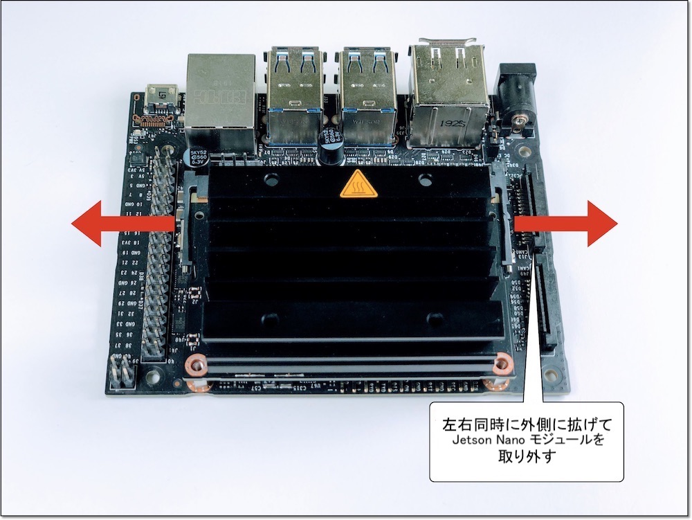
両サイドに広げると、Jetson Nano Moduleがポップアップします。

Jetson Nano Moduleを取り外すと、ネジが見えます。

Wifi Moduleを取り付けるために、真ん中のネジを外しておきます。

※ネジの山カケには注意しましょう。
Wifi Moduleは、Intel Dual Bandwireless-AC 8265 Desktop Kitを取り付けます。


技適
箱の横に技適番号が記載されています。 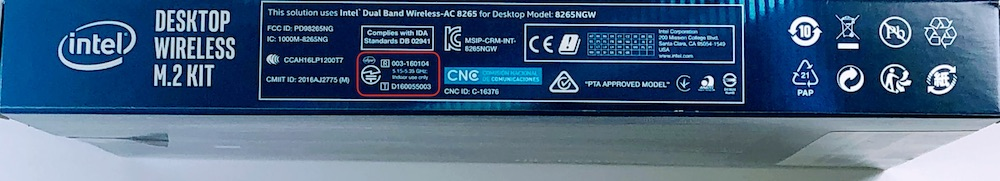
| 項目 | 認証番号 |
|---|---|
| R | 003‐160104 |
| T | D160055003 |
箱から取り出し、スパナで金色のアンテナ固定ネジをゆるめ、銀色のプレートから取外しておきます。

モジュールの端子と接続します。

外したアンテナ固定ネジは、カメラマウントのパーツに取り付けておきます。

スパナで締めます。

カメラマウントの左右に取り付けます。

以下のようになります。

ドライバーで取り付けます。

Wifi Moduleの取り付けが完了したら、Jetson Nano Moduleを再び取り付けます。


Jetson Nano Moduleを再び装着し、ネジ止めします。


10. カメラの取り付け
| 写真 | 部品または工具 | 個数 |
|---|---|---|
 |
CAM026 IMX219-160° | 1 |
 |
５．カメラ固定 | 1 |
 |
六角レンチ | 1 |
カメラモジュールを用意します。
カメラモジュールの４つの穴に六角レンチ棒を使いM2.5のタッピンングビスでカメラを取り付けます。
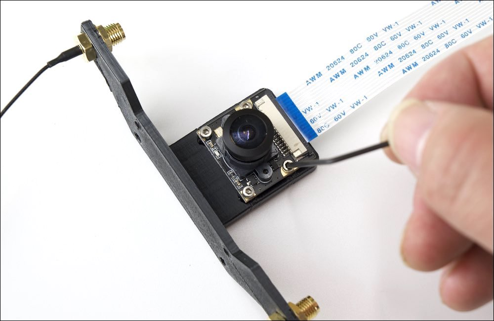
カメラの取り付けは終了となります。
11. 本体に結合
| 写真 | 部品または工具 | 個数 |
|---|---|---|
|
５．カメラ固定 | 1 |
|
プラスドライバー +2×100 | 1 |
 |
ナットドライバー ５．５ | 1 |
カメラマウントとシャーシと結合します。

シャーシの裏には４箇所皿ネジを使用します。

カメラモジュールには４箇所、M３のナットを使用し、ナットドライバーでしっかり固定します。
カメラマウント取り付け完了。

シャーシ最上部と真ん中のシャーシを結合します。

シャーシどおし結合します。M3ナットで4隅を固定します。
ナットドライバでナットを締めます。

12. Jetson取り付け
| 写真 | 部品または工具 | 個数 |
|---|---|---|
|
Jetson Nano 開発者キット B01,A02 | １枚 |
|
精密ドライバセット ED−２０ | 1 |
Jetson Nanoとシャーシを取り付けます。

スクリューねじでJetsonNanoを４箇所のねじで固定します。

13. Cameraケーブルの取り付け


14. CPU Fanの取り付け
| 写真 | 部品または工具 | 個数 |
|---|---|---|
| 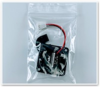 | CPU Fanと取り付けジグ | 1セット |
 |
CPU Fan取り付け用ネジ | 1 |
|
六角レンチ | 1 |
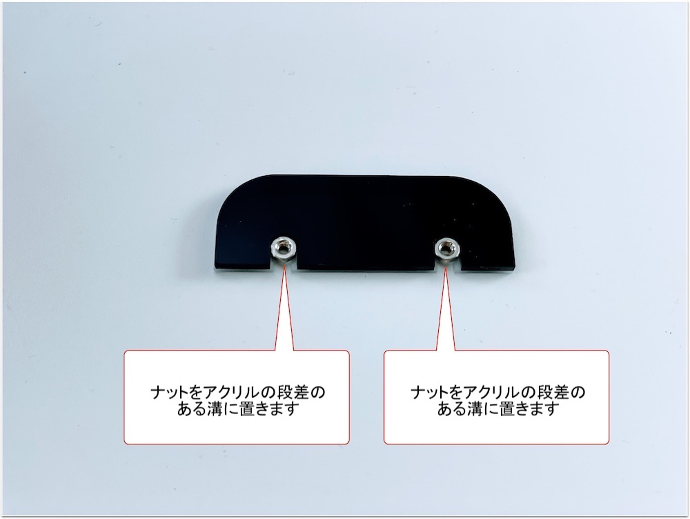


15. Controller Boardの取り付け
| 写真 | 部品または工具 | 個数 |
|---|---|---|
 |
コントローラーボード | 1 |


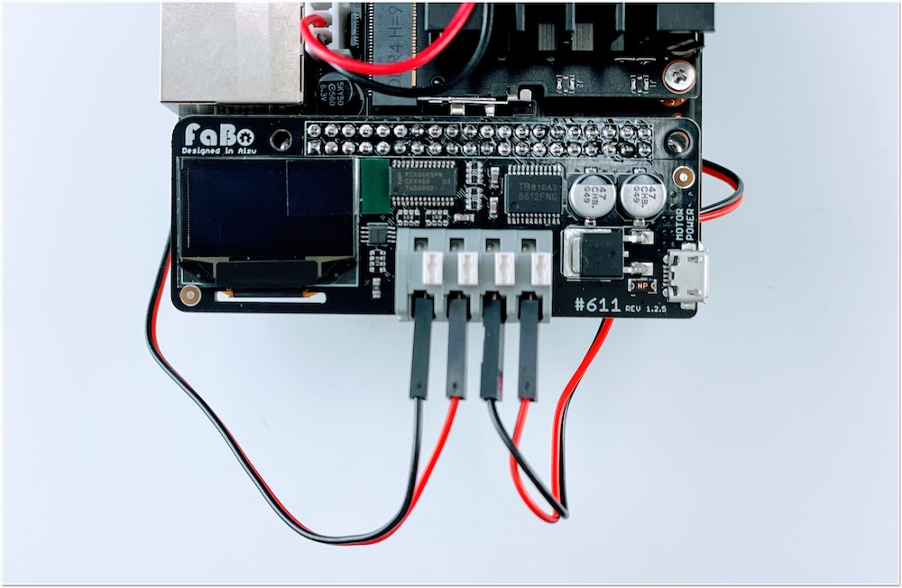
16. SDカードの差し込み
| 写真 | 部品または工具 | 個数 |
|---|---|---|
 |
SD Card(64GB),SDカードケース SunDisk |
１個 |


17. Jumperピンの設定
| 写真 | 部品または工具 | 個数 |
|---|---|---|
 |
Jumperピン（JetsonNano開発者キットB01は標準で付属） | １個 |
使用するJetson NanoがRev.A02か、Rev.B01かを確認します。
DC電源からの給電を有効にするために、Rev.A02、Rev.B01の場合で、下記の箇所のJumperPinの設定をおこないます。


18. その他
| 写真 | 部品または工具 | 個数 |
|---|---|---|
 |
結束バンド | 1 |
Wifiアンテナのケーブルを結束バンドを使用してケーブルを収納します。

結束バンドでWIFI2本のケーブルを束ねます。
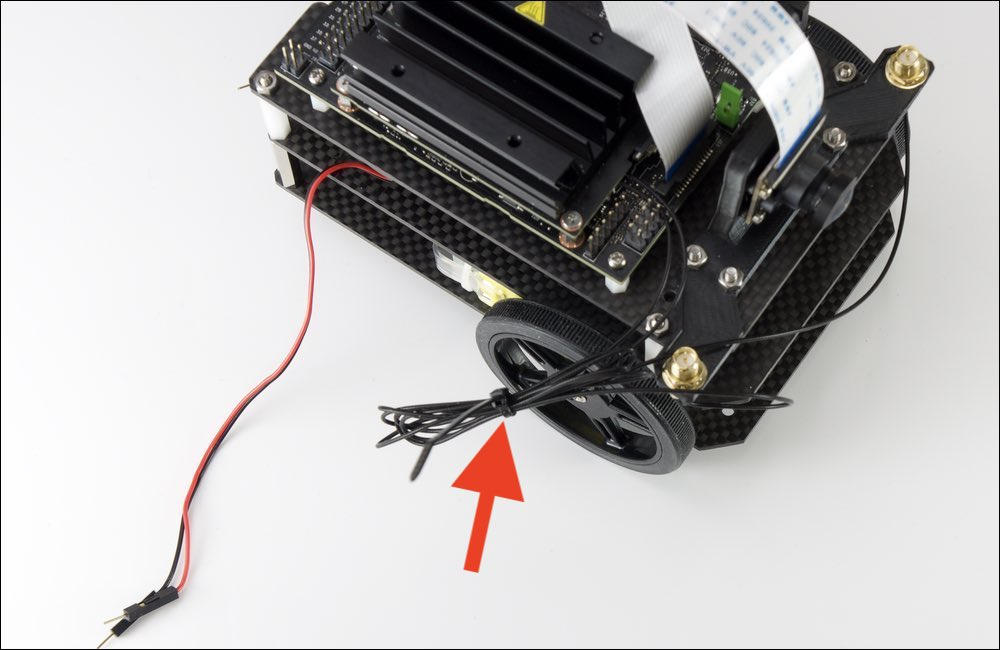
束ねたケーブルは、Jetson Nano開発者キットの基板の下へ格納します。

19. 完成
| 写真 | 部品または工具 | 個数 |
|---|---|---|
 |
マイクロUSBケーブル | 1 |
 |
DCプラグ-USBケーブル | 1 |
|
Intel Dual Bandwireless-AC 8265 Desktop Kit アンテナ２つ |
1 |
いよいよ完成です。電源接続します。モバイルバッテリーからJetsonNanoのDCジャックとマイクロUSBに接続します。

Wifiのアンテナを立てます。Wifiアンテナを回してねじ込みます。

左右にWifiアンテナを２つ立てます。

マイクロUSBケーブルは下記のようにコントローラーボードと繋ぎます。
次に、DCプラグケーブルをモバイルバッテリーと刺し、DCプラグ側は、モータの間を前方にケーブルを通します。

DCプラグがボディの間を通過した様子。
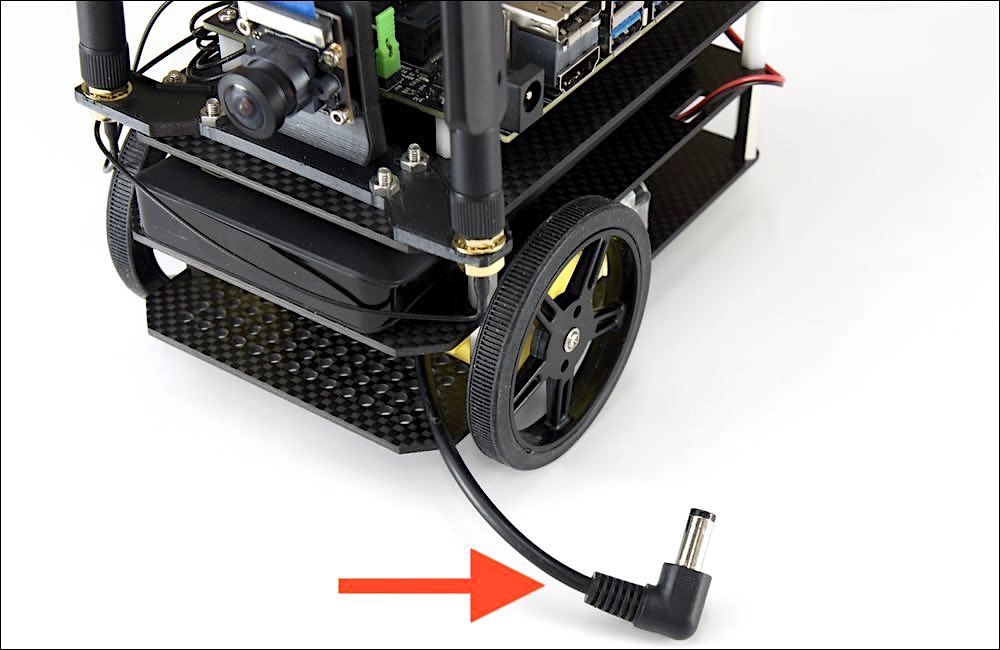
DCプラグをJetsonNano開発者キットのDCジャックへ接続します。JetsonNanoの電源が入ります。

おめでとうございます。JetBotの完成です。カメラモジュールのレンズキャップを装着している場合は外します。
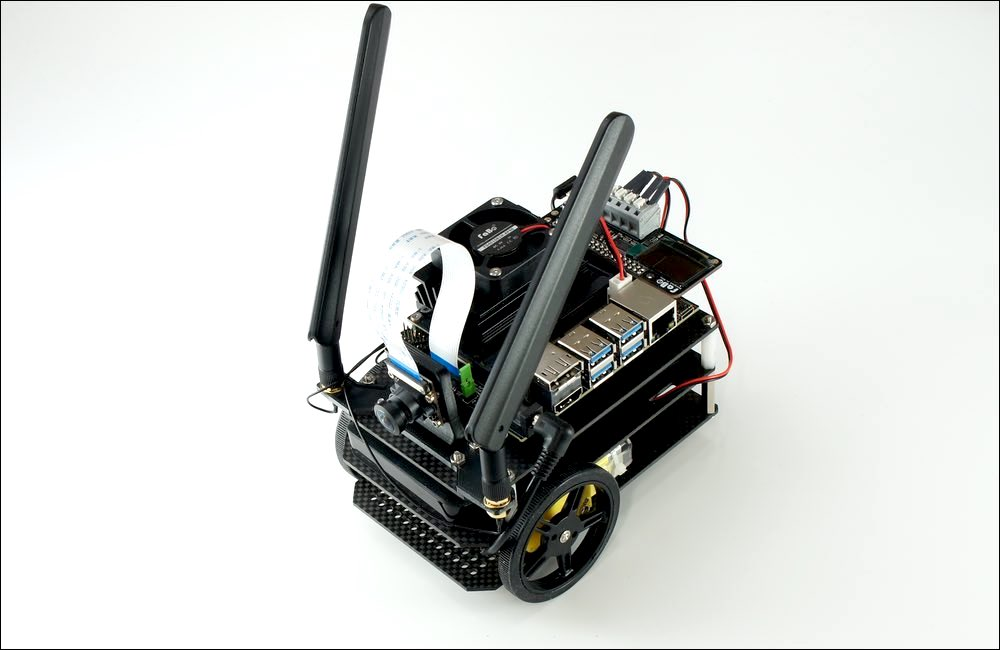